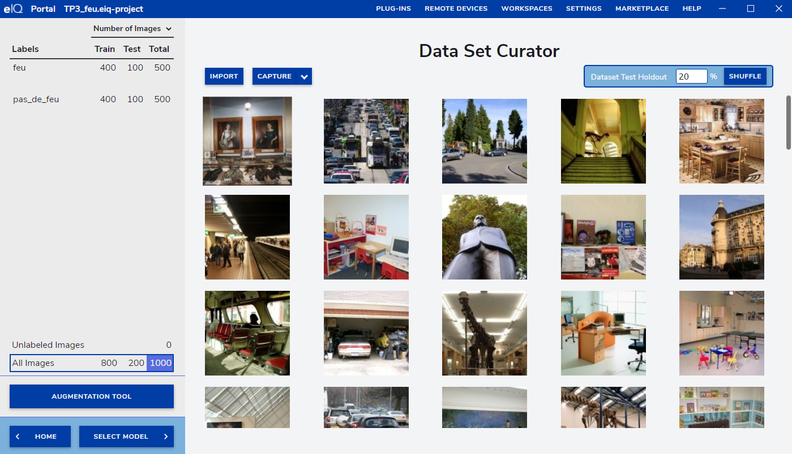
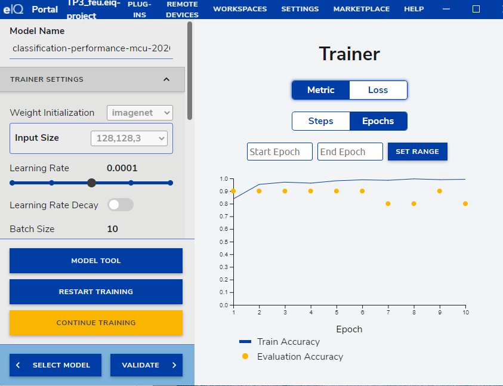
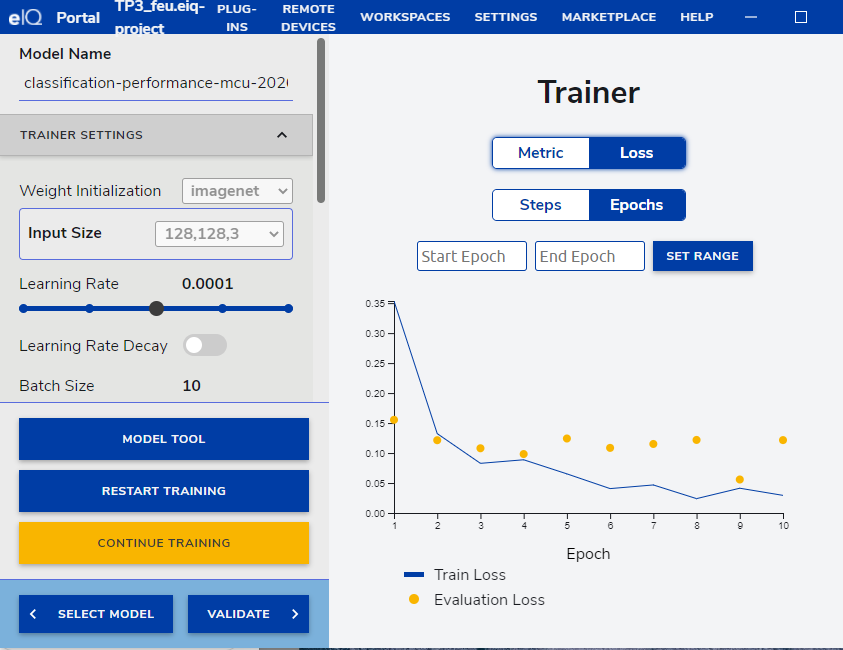
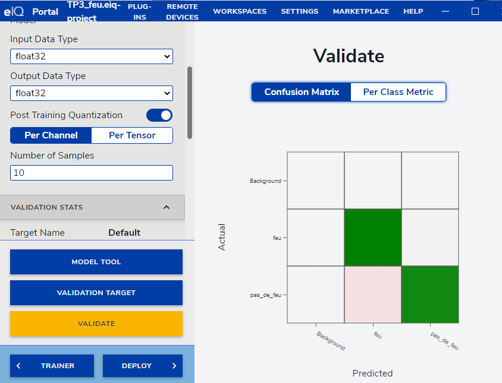
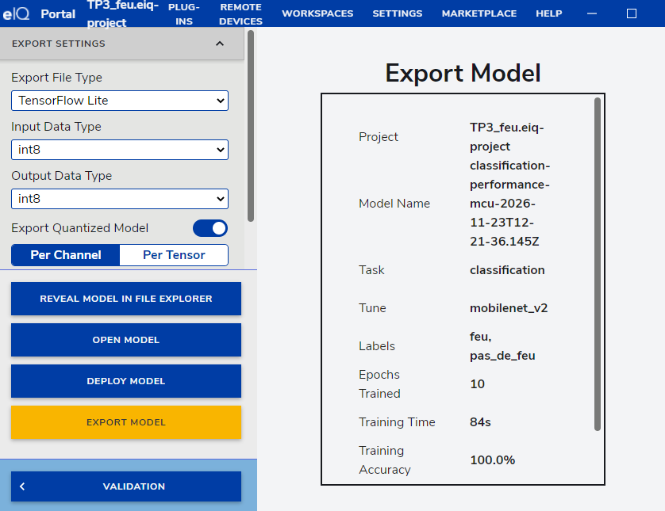
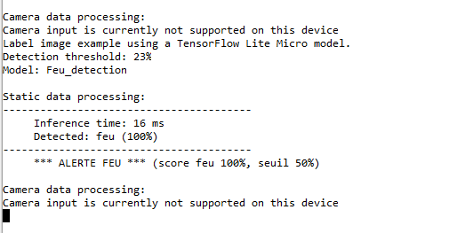

TP3 : Détecter un feu avec un réseau de neurones sur le NPU (FRDM-MCXN947)
Objectifs, prérequis et déroulé
Au TP2, vous avez entraîné un classifieur de fleurs. Dans ce TP, on applique la même méthode à un problème utile : reconnaître sur une image la présence d'un feu. Le modèle a deux classes, feu et pas_de_feu. Vous l'entraînez dans eIQ Portal, vous le convertissez pour le NPU Neutron, puis vous le faites tourner sur la FRDM-MCXN947. Nouveauté par rapport au TP2 : la carte réagit au résultat, avec une LED rouge (alerte) ou verte (pas de feu).
Ce qui change par rapport au TP2
| TP2 | TP3 | |
|---|---|---|
| Classes | 5 fleurs | feu, pas_de_feu |
| Jeu de données | flower_photos (TensorFlow) | FIRE-SMOKE-DATASET (photos de feux et de scènes sans feu) |
| Ce qu'on regarde à la validation | La précision | Les fausses alarmes et surtout les feux manqués |
| Sur la carte | Affichage de la classe | Affichage + LED d'alerte et seuil d'alerte réglable |
Un exercice, pas un détecteur incendie. Le modèle regarde une seule image et peut se tromper : un coucher de soleil ou une lampe orange peuvent déclencher l'alerte, un feu caché par la fumée peut passer inaperçu. Un vrai système de sécurité incendie utilise des capteurs certifiés (fumée, chaleur). On verra pourquoi en fin de TP.
Matériel
- Carte NXP FRDM-MCXN947, câble USB-C sur le connecteur MCU-Link (J17).
Logiciel (le même qu'au TP2)
- MCUXpresso IDE et le SDK FRDM-MCXN947 2.14.0 avec le composant eIQ.
- eIQ Toolkit 1.17 (eIQ Portal + Model Tool + convertisseur Neutron réglé sur MCUXpresso SDK 2.14.0, voir TP2 partie 7.1).
- Python 3 avec
pip install opencv-python numpy. - Netron (netron.app).
- Environ 700 Mo de disque libre pour le jeu de données (archive de 320 Mo + images extraites).
Déroulé
| Partie | Contenu |
|---|---|
| 0 | Le principe : faux positifs et faux négatifs |
| 1 | Préparer le jeu de données (feu / pas de feu) |
| 2 | Créer le projet eIQ Portal et importer les images |
| 3 | Choisir le modèle de base et entraîner |
| 4 | Valider : feux manqués et fausses alarmes |
| 5 | Exporter en int8 et convertir pour le NPU |
| 6 | Intégrer le modèle dans le projet label_image |
| 7 | Ajouter l'alerte : LED rouge ou verte |
| 8 | Tester plusieurs images avec le bouton SW2 |
| 9 | Tester sur la carte et choisir le seuil d'alerte |
| Bonus | Fumée, CPU contre NPU, vos propres photos |
Partie 0 — Le principe
On enchaîne exactement les mêmes étapes qu'au TP2 :
| Étape | Outil | Ce qu'on obtient |
|---|---|---|
| Préparer les images | Script Python | Dossier dataset_feu/ avec train/ et test/, un sous-dossier par classe |
| Entraîner et valider | eIQ Portal | Un modèle float32 et sa matrice de confusion |
| Exporter | eIQ Portal (DEPLOY) | feu_int8.tflite : modèle quantifié int8 |
| Convertir | Model Tool | feu_npu.tflite : les couches compatibles regroupées dans un NeutronGraph |
| Déployer | MCUXpresso IDE | Le firmware tflm_label_image avec votre modèle, vos 2 classes, une image de test et la LED d'alerte |
Deux sortes d'erreurs
Avec deux classes, le modèle peut se tromper de deux façons, et elles n'ont pas du tout le même coût :
Le modèle dit feu |
Le modèle dit pas_de_feu |
|
|---|---|---|
| Il y a un feu | Vrai positif (VP) : alerte justifiée | Faux négatif (FN) : feu manqué |
| Il n'y a pas de feu | Faux positif (FP) : fausse alarme | Vrai négatif (VN) : rien à signaler |
- Une fausse alarme dérange, mais on peut vérifier.
- Un feu manqué peut être grave.
Pour un détecteur de feu, on préfère donc quelques fausses alarmes plutôt que des feux manqués. On mesurera les deux à la partie 4, et on réglera le compromis avec le seuil d'alerte à la partie 9.
Deux nombres à connaître
- Rappel (ou sensibilité) de la classe
feu: la part des feux que le modèle trouve. Rappel = VP / (VP + FN). Un rappel de 95 % veut dire que 5 feux sur 100 sont manqués. - Taux de fausses alarmes : la part des images sans feu prises pour un feu. Taux = FP / (FP + VN).
Partie 1 — Préparer le jeu de données
On utilise FIRE-SMOKE-DATASET (DeepQuestAI, publié sur GitHub). Il contient 3 000 photos réparties en trois classes de 1 000 : Fire (feux de bâtiments, de voitures, de forêt…), Smoke (fumée) et Neutral (scènes sans feu : bureaux, rues, cuisines, magasins…). On garde Fire et Neutral pour nos deux classes. Quelques photos de Smoke serviront de piège sur la carte.
Le script ci-dessous prend 500 images par classe (400 pour l'entraînement, 100 pour le test), les recadre en carré et les réduit en 128 × 128, comme au TP2. Il retire aussi les images en double : le jeu d'origine contient 60 photos de feu présentes deux fois, qui pourraient se retrouver à la fois en train et en test et fausser la mesure.
1.1 Le format attendu par eIQ Portal
Même format qu'au TP2 : un dossier train et un dossier test, et dans chacun un dossier par classe.
dataset_feu/ <- le dossier à sélectionner dans eIQ Portal
├── train/
│ ├── feu/ (400 images)
│ └── pas_de_feu/ (400 images)
└── test/
├── feu/ (100 images)
└── pas_de_feu/ (100 images)
1.2 Le script de préparation
- Créer un dossier de travail, par exemple
C:\TP3-IA\. - Y enregistrer le script
prepare_dataset_feu.pyci-dessous.
# prepare_dataset_feu.py : telecharge FIRE-SMOKE-DATASET et cree dataset_feu/ pour eIQ Portal
# Usage : python prepare_dataset_feu.py [nombre_images_par_classe]
import os, sys, random, shutil, zipfile, hashlib, urllib.request
import cv2
URL = ("https://github.com/DeepQuestAI/Fire-Smoke-Dataset/"
"releases/download/v1/FIRE-SMOKE-DATASET.zip")
ZIP = "FIRE-SMOKE-DATASET.zip"
SRC = "FIRE-SMOKE-DATASET"
N_PAR_CLASSE = int(sys.argv[1]) if len(sys.argv) > 1 else 500
PART_TEST = 0.2 # 20 % des images dans test/
N_CARTE = 3 # photos gardees a part pour tester sur la carte
TAILLE = 128 # taille d'entree du modele
NOMS = {"Fire": "feu", "Neutral": "pas_de_feu"} # Smoke : seulement pour la carte
def carre_128(chemin):
img = cv2.imread(chemin)
if img is None:
return None
h, w = img.shape[:2]
c = min(h, w) # recadrage carre centre
img = img[(h - c) // 2:(h - c) // 2 + c, (w - c) // 2:(w - c) // 2 + c]
return cv2.resize(img, (TAILLE, TAILLE), interpolation=cv2.INTER_AREA)
# 1. Telechargement (environ 320 Mo, une seule fois)
if not os.path.isdir(SRC):
if not os.path.isfile(ZIP):
print("Telechargement de %s (320 Mo) ..." % ZIP)
urllib.request.urlretrieve(URL, ZIP)
print("Decompression ...")
with zipfile.ZipFile(ZIP) as z:
z.extractall(".")
# 2. dataset_feu/train/<classe> et dataset_feu/test/<classe>
# + quelques photos pour la carte
for d in ("dataset_feu", "photos_carte"): # repart de zero
shutil.rmtree(d, ignore_errors=True)
os.makedirs("photos_carte")
random.seed(0) # meme tirage pour tout le monde
for en, fr in NOMS.items():
fichiers, vus = [], set() # on regroupe les images Train et Test d'origine
for groupe in ("Train", "Test"):
dossier = os.path.join(SRC, groupe, en)
for f in sorted(os.listdir(dossier)):
chemin = os.path.join(dossier, f)
empreinte = hashlib.md5(open(chemin, "rb").read()).hexdigest()
if empreinte not in vus: # on ignore les images en double
vus.add(empreinte)
fichiers.append(chemin)
random.shuffle(fichiers)
n_test = int(N_PAR_CLASSE * PART_TEST)
for i, chemin in enumerate(fichiers[:N_PAR_CLASSE]):
groupe = "test" if i < n_test else "train"
dossier = os.path.join("dataset_feu", groupe, fr)
os.makedirs(dossier, exist_ok=True)
img = carre_128(chemin)
if img is not None:
cv2.imwrite(os.path.join(dossier, "%s_%03d.jpg" % (fr, i)), img)
# photos jamais vues par eIQ Portal, pour le test sur la carte
for j, chemin in enumerate(fichiers[N_PAR_CLASSE:N_PAR_CLASSE + N_CARTE]):
img = carre_128(chemin)
if img is not None:
cv2.imwrite(os.path.join("photos_carte", "%s_%d.jpg" % (fr, j + 1)), img)
print("%-10s : %d train, %d test" % (fr, N_PAR_CLASSE - n_test, n_test))
# 3. trois photos de fumee sans flammes : un piege pour le test sur la carte
dossier = os.path.join(SRC, "Test", "Smoke")
for j, f in enumerate(sorted(os.listdir(dossier))[:N_CARTE]):
img = carre_128(os.path.join(dossier, f))
if img is not None:
cv2.imwrite(os.path.join("photos_carte", "fumee_%d.jpg" % (j + 1)), img)
print("Termine : importer le dossier dataset_feu dans eIQ Portal")
1.3 Lancer le script
- Ouvrir un terminal (Invite de commandes ou Git Bash) dans
C:\TP3-IA\. - Lancer :
python prepare_dataset_feu.py - Le téléchargement (320 Mo) prend quelques minutes. S'il échoue (lien GitHub inaccessible, proxy de l'établissement), voir l'annexe. Le script affiche ensuite :
feu : 400 train, 100 test
pas_de_feu : 400 train, 100 test
Termine : importer le dossier dataset_feu dans eIQ Portal
Le dossier de travail contient alors :
C:\TP3-IA\
├── prepare_dataset_feu.py
├── FIRE-SMOKE-DATASET.zip
├── FIRE-SMOKE-DATASET\ (photos d'origine, ne PAS importer)
├── photos_carte\ (9 photos pour tester sur la carte, ne PAS importer)
│ feu_1..3, pas_de_feu_1..3, fumee_1..3
└── dataset_feu\ (LE dossier à importer dans eIQ Portal)
├── train\
└── test\
1.4 Regarder les images
Ouvrir quelques images de dataset_feu\train\feu et de dataset_feu\train\pas_de_feu.
Questions :
- Les images
pas_de_feucontiennent-elles des choses orange ou lumineuses (soleil, lampes, phares) ? - Si le jeu
pas_de_feune contient presque que des intérieurs et des rues en plein jour, que risque d'apprendre le modèle ? (Indice : « orange et lumineux = feu ».)
Partie 2 — Créer le projet eIQ Portal et importer les images
- Lancer eIQ Portal, cliquer CREATE PROJECT, puis IMPORT DATASET.
- Choisir Structured folders et sélectionner
C:\TP3-IA\dataset_feu(le dossier qui contienttrainettest). Cliquer IMPORT. - Nommer le projet
TP3_feu, puis Save.
Checkpoint dans le Data Set Curator :
- 2 labels :
feuetpas_de_feu, chacun avec 400 images en Train, 100 en Test et 500 au Total ; - Unlabeled Images : 0 et All Images : 1000.

Figure 1 — Bon import : 2 labels, 400 images en Train et 100 en Test pour chacun, 1 000 images au total, aucune image sans label.
Si vous voyez les labels test et train, ou Unlabeled Images : 1000, vous avez sélectionné le mauvais dossier : voir le TP2, partie 2.
Partie 3 — Choisir le modèle de base et entraîner
3.1 Modèle de base
Cliquer SELECT MODEL et répondre comme au TP2 : Classification, Performance, MCU. eIQ Portal propose le même petit MobileNet V2 (Alpha 0.35).
3.2 Réglages du Trainer
| Paramètre | Valeur |
|---|---|
| Weight Initialization | imagenet (par défaut) |
| Input Size | 128,128,3 |
| Learning Rate | 0.0001 (par défaut) |
| Batch Size | 10 (par défaut) |
| Epochs To Train | 10 |
Laisser le reste par défaut et cliquer START TRAINING. Avec 800 images d'entraînement (contre 1 200 au TP2), l'entraînement est plus court : environ 1 min 30 (84 s) lors de notre essai.
3.3 Lire les courbes
Comme au TP2, regarder Train Accuracy et surtout Evaluation Accuracy (images de test).

Figure 2 — Précision (Metric) sur 10 époques : la précision d'entraînement (ligne) dépasse 0,95 dès la 2e époque et finit près de 1 ; la précision d'évaluation (points) reste entre 0,8 et 0,9.

Figure 3 — Perte (Loss) : la perte d'entraînement (ligne) descend de 0,35 à 0,03 ; la perte d'évaluation (points) reste autour de 0,1 à 0,12.
Comment lire les figures 2 et 3 : avec 2 classes très différentes, le modèle apprend très vite, dès la 2e époque. Ensuite la courbe d'entraînement continue de s'améliorer, mais l'évaluation ne progresse plus : c'est encore le début du surapprentissage, comme au TP2. Ici, 3 ou 4 époques suffiraient.
| Époque | Train Accuracy | Evaluation Accuracy | Train Loss | Evaluation Loss |
|---|---|---|---|---|
| 1 | ||||
| 5 | ||||
| 10 |
Question : avec seulement 2 classes, la précision est-elle plus haute ou plus basse qu'au TP2 ? Un modèle qui répondrait toujours feu aurait quelle précision sur ce jeu de test ? Que montre ce chiffre sur l'intérêt de la précision seule ?
Partie 4 — Valider : feux manqués et fausses alarmes
- Cliquer VALIDATE, laisser Input/Output Data Type sur
float32et Softmax Threshold à 0, puis cliquer le bouton jaune VALIDATE. - La matrice de confusion n'a plus que 2 lignes et 2 colonnes utiles (ignorer Background). Passer la souris sur une case pour lire le nombre d'images. Recopier les quatre valeurs :
Prédit feu |
Prédit pas_de_feu |
|
|---|---|---|
Réel feu (100 images) |
VP = | FN = |
Réel pas_de_feu (100 images) |
FP = | VN = |

Figure 4 — Matrice de confusion obtenue lors de notre essai. La ligne feu n'a pas d'erreur visible (case pas_de_feu blanche) : aucun feu manqué. La ligne pas_de_feu a une case rose sous feu : quelques fausses alarmes.
- Calculer :
- le rappel de la classe
feu: VP / (VP + FN) = ……… % ; - le taux de fausses alarmes : FP / (FP + VN) = ……… % ;
- la précision globale : (VP + VN) / 200 = ……… %.
- le rappel de la classe
Questions :
- Combien de feux le modèle a-t-il manqués sur 100 ? Combien de fausses alarmes sur 100 images sans feu ?
- Pour un détecteur de feu, laquelle de ces deux erreurs faut-il réduire en priorité ? Pourquoi ?
- Bonus : activer Post Training Quantization, mettre Input/Output Data Type sur
int8et relancer VALIDATE. Le nombre de feux manqués change-t-il avec l'int8 ?
Partie 5 — Exporter en int8 et convertir pour le NPU
5.1 Exporter (comme au TP2, partie 6)
- DEPLOY : TensorFlow Lite, Input Data Type : int8, Output Data Type : int8, Export Quantized Model activé, Per Channel.
- Vérifier la ligne Labels du résumé :
feu, pas_de_feu. - EXPORT MODEL →
C:\TP3-IA\feu_int8.tflite.

Figure 5 — Les réglages d'export : TensorFlow Lite, int8 en entrée et en sortie, modèle quantifié Per Channel. Le résumé indique le modèle de base (mobilenet_v2), les 2 labels feu, pas_de_feu, 10 époques en 84 s.
- Checkpoint Netron : entrée
int8[1, 128, 128, 3], sortie[1, 2].
5.2 Vérifier les versions (comme au TP2, partie 7.1)
La version du SDK FRDM-MCXN947 dans MCUXpresso IDE (Installed SDKs) et celle du Neutron converter dans eIQ Portal (SETTINGS) doivent être identiques (ici 2.14.0). Sinon, la carte redémarre en boucle au chargement du modèle.
5.3 Convertir
- MODEL TOOL → File → Open :
feu_int8.tflite. - File → Convert → TensorFlow Lite for Neutron (.tflite). Vérifier que le chemin du convertisseur contient 2.14.0.
- Neutron target : mcxn94x, Custom options vide, Convert →
C:\TP3-IA\feu_npu.tflite.
En ligne de commande :
neutron-converter --input feu_int8.tflite --output feu_npu.tflite --target mcxn94x
5.4 Vérifier dans Netron
Ouvrir feu_npu.tflite, repérer le NeutronGraph et noter les opérateurs restés en dehors. Comparer avec le modèle de fleurs du TP2 : le modèle de base est le même, seule la dernière couche passe de 5 à 2 sorties.
| Fichier | Taille (Ko) | Opérateurs hors NeutronGraph |
|---|---|---|
fleurs_npu.tflite (TP2) |
||
feu_npu.tflite |
Partie 6 — Intégrer le modèle dans le projet label_image
On part d'un projet tflm_label_image propre, importé depuis le SDK FRDM-MCXN947 2.14.0 (préfixe TP3-IA), comme au TP2 partie 8.1. Compiler et flasher une première fois pour vérifier qu'il marche (stopwatch). Copier dans un dossier tools/ du projet : feu_npu.tflite, swap_model.py et img2c.py (TP1).
6.1 Remplacer le modèle (TP2, partie 8.2)
- Cas A,
model_data.h:- Copier
source/model/model_data.hdanstools/model_data_dorigin.h. python swap_model.py model_data_dorigin.h feu_npu.tflite- Dans le
model_data.hcréé :#define MODEL_NAME "feu_npu"etkTensorArenaSizeà300 * 1024(même modèle de base qu'au TP2, donc même besoin de mémoire). - Copier ce fichier à la place de
source/model/model_data.h.
- Copier
- Cas B,
model_data.s: copierfeu_npu.tflitedanssource/model/, mettre son nom après.incbin, changerMODEL_NAME.
6.2 Ops resolver. Dans source/model/model_mobilenet_ops_npu.cpp, une ligne Add... pour chaque opérateur noté en 5.4, plus NEUTRON_GRAPH. Si votre resolver du TP2 marchait, il devrait convenir tel quel : le modèle de base est le même.
6.3 Les classes. Dans source/labels.h, remplacer le contenu du tableau par :
"feu",
"pas_de_feu"
L'ordre doit être celui d'eIQ Portal (ordre alphabétique, celui des lignes de la matrice de confusion) : la sortie n° 0 du modèle est feu, la sortie n° 1 est pas_de_feu. Ce point compte encore plus ici : si on inverse l'ordre, la carte affiche « pas de feu » quand elle voit un feu.
6.4 L'image de test. Copier C:\TP3-IA\photos_carte\feu_1.jpg dans tools/, puis :
python img2c.py feu_1.jpg feu_1
Le script doit afficher (128, 128, 3) = 49152 octets. Remplacer source/image/image_data.h par le fichier créé (en sortant l'ancien de source/).
6.5 Premier essai. Clean, Build, Debug → Resume, terminal série 115200 8N1. La carte doit afficher Detected: feu (…%), puis Camera data processing: Camera input is currently not supported on this device. Ce second message est normal : l'exemple traite une seule image, puis s'arrête (on changera ça en partie 8).
Partie 7 — Ajouter l'alerte : LED rouge ou verte
Jusqu'ici la carte affiche seulement un texte. Un système embarqué doit agir : on allume la LED RGB de la carte en rouge si le score de la classe feu dépasse un seuil d'alerte, en vert sinon.
7.1 Où se trouve l'affichage du résultat ?
Le texte Detected: ... est écrit par la fonction MODEL_ProcessOutput, dans le fichier output_postproc.cpp. Pour le trouver : Search → File… (Ctrl+H), chercher Detected: dans le projet.
7.2 Le score de la classe feu
La sortie du modèle est un tableau de 2 nombres int8 (un par classe). La fonction MODEL_GetTopN du SDK les transforme en pourcentage par la formule (valeur + 128) / 255. On fait la même chose, mais seulement pour la case n° 0 (feu). On obtient ainsi le score du feu même quand ce n'est pas la classe gagnante, ce qui permet de choisir n'importe quel seuil.
7.3 Modifier output_postproc.cpp
- Ajouter, sous les
#includeexistants :
#include "board.h" // LED de la carte (LED_RED_ON, LED_GREEN_ON...)
#include "fsl_port.h" // choix de la fonction des broches
#define CLASSE_FEU 0 // indice de "feu" dans labels.h
#define SEUIL_ALERTE_FEU 50 // en % : alerte si score feu >= seuil
/* Les LED rouge (P0_10) et verte (P0_27) sont sur le port 0.
Elles s'allument quand la broche est a 0 (active a l'etat bas). */
static void LED_Init(void)
{
static bool dejaFait = false;
if (dejaFait) return;
CLOCK_EnableClock(kCLOCK_Gpio0);
PORT_SetPinMux(PORT0, BOARD_LED_RED_GPIO_PIN, kPORT_MuxAlt0); // broche en GPIO
PORT_SetPinMux(PORT0, BOARD_LED_GREEN_GPIO_PIN, kPORT_MuxAlt0);
LED_RED_INIT(1); // sortie, LED eteinte
LED_GREEN_INIT(1);
dejaFait = true;
}
/* Score de la classe feu en %, a partir de la sortie brute du modele */
static int ScoreFeu(const uint8_t* data, tensor_type_t type)
{
if (type == kTensorType_INT8)
return (((const int8_t*)data)[CLASSE_FEU] + 128) * 100 / 255;
return (int)(((const float*)data)[CLASSE_FEU] * 100); // modele float32 (bonus CPU)
}
- Dans
MODEL_ProcessOutput, juste avant la lignereturn kStatus_Success;, ajouter :
LED_Init();
int scoreFeu = ScoreFeu(data, type);
if (scoreFeu >= SEUIL_ALERTE_FEU)
{
LED_GREEN_OFF();
LED_RED_ON();
PRINTF(" *** ALERTE FEU *** (score feu %d%%, seuil %d%%)" EOL,
scoreFeu, SEUIL_ALERTE_FEU);
}
else
{
LED_RED_OFF();
LED_GREEN_ON();
PRINTF(" Pas de feu (score feu %d%%, seuil %d%%)" EOL,
scoreFeu, SEUIL_ALERTE_FEU);
}
- Build. Si la compilation signale
LED_RED_ONoukCLOCK_Gpio0inconnu, vérifier que#include "board.h"est bien présent, puis regarder dansboard/board.hdu projet le nom exact des macros LED.
Pourquoi PORT_SetPinMux ? Chaque broche du MCX N947 peut avoir plusieurs fonctions (GPIO, UART, PWM…). Le projet label_image ne configure que les broches de la liaison série. On indique donc que les broches des LED sont des GPIO (fonction Alt0), puis on active l'horloge du module GPIO0.
7.4 Essai
Clean, Build, Debug → Resume. Avec feu_1.jpg, la LED doit être rouge et le terminal doit afficher *** ALERTE FEU ***. Refaire 6.4 avec pas_de_feu_1.jpg : la LED doit être verte.

Figure 6 — Le modèle reconnaît le feu (100 %) en 16 ms sur le NPU, et la nouvelle ligne *** ALERTE FEU *** s'affiche avec le score et le seuil.
Partie 8 — Tester plusieurs images avec le bouton SW2
Jusqu'ici, pour changer d'image, il faut reconvertir, recompiler et reflasher. On va mettre plusieurs images dans le firmware : la carte analyse la première, affiche le résultat, puis passe à l'image suivante à chaque appui sur le bouton SW2. Après la dernière, elle revient à la première.
8.1 Comment l'exemple choisit l'image
Ouvrir source/image/image_load.c. La fonction IMAGE_GetImage est appelée par main() avant chaque inférence :
- au premier appel, elle copie le tableau
image_data(le fichierimage_data.h) vers l'entrée du modèle ; - au deuxième appel, elle affiche
Camera input is currently not supported on this deviceet bloque la carte dans une boucle sans fin (for (;;)). C'est le message vu en 6.5.
On va remplacer ce fichier : à chaque appel après le premier, on attend un appui sur SW2, puis on prend l'image suivante.
8.2 Convertir plusieurs images en un seul fichier
Le script img2c.py ne convertit qu'une image. Le script img2c_multi.py ci-dessous en convertit plusieurs et les range dans un seul fichier images_data.h, avec un tableau par image (image_0, image_1…), la liste des tableaux (images[]), la liste des noms (noms_images[]) et leur nombre (NB_IMAGES).
- Enregistrer le script dans
tools/:
# img2c_multi.py : convertit plusieurs images en un seul images_data.h
# Usage : python img2c_multi.py feu_1.jpg pas_de_feu_1.jpg fumee_1.jpg
import os, sys
import cv2
if len(sys.argv) < 2:
sys.exit("Usage : python img2c_multi.py image1.jpg image2.jpg ...")
noms = []
with open("images_data.h", "w") as f:
for i, src in enumerate(sys.argv[1:]):
img = cv2.imread(src) # lit en BGR
if img is None:
sys.exit("Impossible de lire " + src)
h, w = img.shape[:2]
c = min(h, w) # recadrage carre centre
img = img[(h - c) // 2:(h - c) // 2 + c, (w - c) // 2:(w - c) // 2 + c]
img = cv2.resize(img, (128, 128), interpolation=cv2.INTER_AREA)
img = cv2.cvtColor(img, cv2.COLOR_BGR2RGB) # le modele attend du RGB
f.write("static const uint8_t image_%d[] = {\n" % i)
img.tofile(f, ", ", "0x%02X")
f.write("\n};\n\n")
noms.append(os.path.splitext(os.path.basename(src))[0])
print("image_%d : %-15s %s = %d octets" % (i, noms[-1], img.shape, img.size))
n = len(noms)
f.write("#define NB_IMAGES %d\n" % n)
f.write("static const uint8_t* const images[NB_IMAGES] = {%s};\n"
% ", ".join("image_%d" % i for i in range(n)))
f.write("static const char* const noms_images[NB_IMAGES] = {%s};\n"
% ", ".join('"%s"' % s for s in noms))
print("images_data.h ecrit :", n, "images")
- Copier dans
tools/trois photos deC:\TP3-IA\photos_carte\, puis :
python img2c_multi.py feu_1.jpg pas_de_feu_1.jpg fumee_1.jpg
- Le script affiche une ligne par image, chacune de
(128, 128, 3) = 49152 octets, puisimages_data.h ecrit : 3 images. - Copier
images_data.hdanssource/image/, à côté deimage_data.h(on peut laisser l'ancien fichier : il ne sera plus inclus).
Chaque image occupe 48 Ko de Flash : 3 images font 144 Ko, 9 images environ 430 Ko. La Flash du MCX N947 (2 Mo) a la place.
8.3 Remplacer image_load.c
Remplacer tout le contenu de source/image/image_load.c par :
/* image_load.c (TP3) : plusieurs images, on passe a la suivante avec SW2 */
#include "demo_config.h"
#include "fsl_debug_console.h"
#include "image.h"
#include "image_utils.h"
#include "images_data.h" /* NB_IMAGES, images[], noms_images[] (img2c_multi.py) */
#include "board.h" /* BOARD_SW2_GPIO, BOARD_SW2_GPIO_PIN, fonctions GPIO */
static int s_index = -1; /* image en cours (-1 : pas encore commence) */
const char* s_imageName = "";
/* Bouton SW2 = broche P0_23 en entree. Elle vaut 1 au repos, 0 quand on appuie. */
static void BOUTON_Init(void)
{
gpio_pin_config_t entree = {kGPIO_DigitalInput, 0};
CLOCK_EnableClock(kCLOCK_Gpio0);
/* fonction GPIO (MUX 0), entree numerique activee (IBE),
resistance de tirage vers le haut (PE + PS) */
PORT0->PCR[BOARD_SW2_GPIO_PIN] = PORT_PCR_MUX(0) | PORT_PCR_IBE_MASK
| PORT_PCR_PE_MASK | PORT_PCR_PS_MASK;
GPIO_PinInit(BOARD_SW2_GPIO, BOARD_SW2_GPIO_PIN, &entree);
}
/* Attend un appui complet sur SW2 (appui puis relachement) */
static void BOUTON_Attendre(void)
{
PRINTF(EOL "Appuyez sur SW2 pour l'image suivante..." EOL);
while (GPIO_PinRead(BOARD_SW2_GPIO, BOARD_SW2_GPIO_PIN) == 1) {} /* attendre l'appui */
SDK_DelayAtLeastUs(20000, SystemCoreClock); /* anti-rebond 20 ms */
while (GPIO_PinRead(BOARD_SW2_GPIO, BOARD_SW2_GPIO_PIN) == 0) {} /* attendre le relachement */
SDK_DelayAtLeastUs(20000, SystemCoreClock);
}
status_t IMAGE_GetImage(uint8_t* dstData, int32_t dstWidth, int32_t dstHeight, int32_t dstChannels)
{
if (s_index < 0)
{
BOUTON_Init(); /* premier appel : premiere image, sans attendre */
s_index = 0;
}
else
{
BOUTON_Attendre();
s_index = (s_index + 1) % NB_IMAGES; /* apres la derniere, retour a la premiere */
}
s_imageName = noms_images[s_index];
PRINTF(EOL "Image %d/%d : %s" EOL, s_index + 1, NB_IMAGES, s_imageName);
return IMAGE_Decode(images[s_index], dstData, dstWidth, dstHeight, dstChannels);
}
const char* IMAGE_GetImageName()
{
return s_imageName;
}
Quelques explications
PORT0->PCR[...]: comme pour les LED (partie 7), on choisit la fonction de la broche. Pour une entrée, il faut en plus activer le tampon d'entrée (IBE), sinon la broche se lit toujours à 0. La résistance de tirage vers le haut (PE+PS) donne un 1 stable quand le bouton est relâché.- Anti-rebond : quand on appuie sur un bouton, le contact rebondit pendant quelques millisecondes et produit plusieurs 0 et 1. Sans la pause de 20 ms, un seul appui pourrait faire sauter plusieurs images.
% NB_IMAGES(reste de la division) : après la dernière image, l'indice revient à 0.- On attend le relâchement : si on garde le doigt appuyé, la carte ne fait défiler qu'une seule image.
8.4 Essai
- Clean, Build. Dans le résumé mémoire, la taille de PROGRAM_FLASH augmente d'environ 48 Ko par image.
- Debug → Resume. Le terminal affiche :
Image 1/3 : feu_1, le résultat, la LED rouge ;Appuyez sur SW2 pour l'image suivante....
- Appuyer sur SW2 :
Image 2/3 : pas_de_feu_1, LED verte. Puis encore :Image 3/3 : fumee_1. Encore : retour àImage 1/3.
Questions :
- Que se passe-t-il si on retire l'anti-rebond (les deux lignes
SDK_DelayAtLeastUs) ? Essayez. - Pendant l'attente de l'appui, le processeur tourne sans rien faire dans la boucle
while. Comment pourrait-on économiser de l'énergie ? (Indice : interruption du GPIO et mode basse consommation.) - Combien d'images pourrait-on mettre au maximum dans la Flash du MCX N947, en gardant le modèle ?
Partie 9 — Tester sur la carte et choisir le seuil d'alerte
9.1 Tester les 9 photos
Avec le firmware de la partie 8, convertir d'un coup les 9 photos de photos_carte\ (python img2c_multi.py feu_1.jpg feu_2.jpg ...), Build, Debug, puis faire défiler les images avec SW2 et noter chaque résultat. Les photos fumee_* sont des pièges : de la fumée sans flammes visibles, une classe que le modèle n'a jamais vue.
| Image | Il y a un feu ? | Detected: (classe et %) |
Score feu (%) | LED | Temps (ms) |
|---|---|---|---|---|---|
feu_1 |
oui | ||||
feu_2 |
oui | ||||
feu_3 |
oui | ||||
pas_de_feu_1 |
non | ||||
pas_de_feu_2 |
non | ||||
pas_de_feu_3 |
non | ||||
fumee_1 |
? | ||||
fumee_2 |
? | ||||
fumee_3 |
? | ||||
| Votre photo : coucher de soleil, bougie, lampe orange… | non |
9.2 Choisir le seuil
Avec 2 classes, le score feu et le score pas_de_feu font environ 100 % à eux deux. Un seuil de 50 % revient donc à prendre la classe gagnante.
- Pas besoin de tout recompiler : à partir du score feu noté en 9.1, déduire pour chaque photo si l'alerte se déclencherait avec un seuil de 20 %, de 50 % et de 80 %.
- Vérifier un des cas sur la carte : changer
SEUIL_ALERTE_FEU, Build, Debug, et regarder la LED. - Remplir :
| Seuil | Feux manqués (sur les photos testées) | Fausses alarmes |
|---|---|---|
| 20 % | ||
| 50 % | ||
| 80 % |
Questions :
- Quand on baisse le seuil, que deviennent les feux manqués ? Et les fausses alarmes ?
- Quel seuil choisiriez-vous pour un détecteur de feu dans un entrepôt ? Justifiez avec la partie 0.
- Que répond le modèle pour les photos de fumée ? Pourquoi un modèle à 2 classes ne peut-il pas répondre « je ne sais pas » ?
- Le temps d'inférence est-il différent de celui du TP2 ? Pourquoi (pensez à ce qui change entre les deux modèles) ?
Bonus
B.1 Détecter aussi la fumée (3 classes). La fumée apparaît souvent avant les flammes. Dans prepare_dataset_feu.py, remplacer la ligne NOMS par NOMS = {"Fire": "feu", "Neutral": "pas_de_feu", "Smoke": "fumee"}, relancer le script dans un nouveau dossier et refaire tout le TP avec 3 classes. Attention à l'ordre alphabétique dans labels.h (feu, fumee, pas_de_feu) et à l'indice CLASSE_FEU. On peut allumer la LED bleue (LED_BLUE_ON(), broche P1_2, port 1, horloge kCLOCK_Gpio1) pour la fumée.
B.2 Comparer CPU et NPU. Comme au bonus B.1 du TP2 : intégrer feu_int8.tflite (non converti) avec les opérateurs CPU dans le resolver, et comparer les temps d'inférence.
B.3 Réduire les fausses alarmes. Prendre au téléphone une dizaine de photos de la salle avec des objets orange ou lumineux (lampes, écrans, soleil par la fenêtre), les recadrer en 128 × 128 et les ajouter dans dataset_feu/train/pas_de_feu/. Réentraîner : les fausses alarmes de la partie 9 diminuent-elles ?
B.4 Plus de données. Relancer python prepare_dataset_feu.py 900 (900 images par classe, dans un nouveau dossier) et comparer le rappel de la classe feu.
Dépannage, synthèse et sources
| Symptôme | Cause probable | Solution |
|---|---|---|
| La carte redémarre en boucle | Convertisseur Neutron et SDK de versions différentes | Partie 5.2, puis reconvertir |
Didn't find op for builtin opcode ... |
Opérateur manquant dans l'ops resolver | Comparer avec la liste notée en 5.4 |
Failed to resize buffer ... missing puis AllocateTensors() failed |
kTensorArenaSize trop petit |
300 * 1024 (partie 6.1), voir TP2 partie 9.2 |
Detected: pas_de_feu sur une image de feu évidente, avec un score élevé |
Ordre inversé dans labels.h |
"feu" en premier, "pas_de_feu" en second (partie 6.3) |
| LED d'alerte allumée à l'envers (rouge sans feu) | CLASSE_FEU ne correspond pas à l'ordre de labels.h |
CLASSE_FEU 0 si feu est en premier |
| Les LED ne s'allument pas, le texte est correct | LED_Init() pas appelée, ou broches pas en GPIO |
Vérifier l'ajout de la partie 7.3 (étape 2) et PORT_SetPinMux |
LED_RED_ON ou kCLOCK_Gpio0 inconnu à la compilation |
#include "board.h" manquant |
Ajouter l'include (partie 7.3, étape 1) |
images_data.h: No such file or directory |
Fichier pas copié dans source/image/ ou pas de Refresh |
Copier images_data.h (partie 8.2), puis F5 sur le projet |
| Appuyer sur SW2 ne fait rien | Broche pas en entrée (IBE manquant) ou mauvais bouton |
Vérifier BOUTON_Init (partie 8.3) et appuyer sur SW2, pas sur RESET |
| Un appui fait sauter plusieurs images | Rebonds du bouton | Garder les deux SDK_DelayAtLeastUs (partie 8.3) |
Labels test et train dans eIQ Portal |
Dossier sélectionné un niveau trop haut | Sélectionner dataset_feu (partie 2) |
| Le script s'arrête au téléchargement | Pas d'accès à GitHub depuis le PC (proxy) | Télécharger l'archive depuis le lien de secours (annexe) et la poser à côté du script |
Toujours feu (ou toujours pas_de_feu) quelle que soit l'image |
Modèle exporté en float32, ou image mal convertie | Vérifier l'entrée int8 dans Netron (5.1), refaire img2c.py |
Questions de synthèse
- Pourquoi la précision globale ne suffit-elle pas pour juger un détecteur de feu ?
- Définissez faux positif et faux négatif sur l'exemple du feu. Lequel est le plus grave ?
- Quel est l'effet du seuil d'alerte sur ces deux erreurs ?
- Citez deux situations réelles où ce modèle se tromperait, et une façon d'améliorer le système (données, capteurs, plusieurs images…).
- Qu'avez-vous changé dans le firmware pour passer du TP2 au TP3 ? Qu'est-ce qui n'a pas changé ?
À vérifier selon votre installation : ce TP suit le projet tflm_label_image du SDK FRDM-MCXN947 2.14.0 (fichiers source/model/output_postproc.cpp et source/image/image_load.c, LED rouge P0_10, verte P0_27, bouton SW2 sur P0_23). Avec une autre version du SDK, les noms et l'emplacement des fichiers peuvent changer : vérifier les macros LED_..._ON et BOARD_SW2_... dans board.h. Les tableaux de résultats sont à remplir avec vos propres mesures.
À propos du jeu de données : FIRE-SMOKE-DATASET est publié sur GitHub par DeepQuestAI, sans licence précisée. Les images proviennent d'Internet. On l'utilise ici dans un cadre pédagogique : ne redistribuez pas les images.
Sources : FIRE-SMOKE-DATASET (DeepQuestAI) · NXP — MCXN947: How to Train and Deploy Customer ML model to NPU · Notes de version eIQ Toolkit (EIQTRN) · Compatibilité Neutron SDK / MCUXpresso SDK · README tflm_label_image · Exemples MCUXpresso SDK (board.h FRDM-MCXN947) · Netron
Annexe — Téléchargement de secours du jeu de données
Si le script prepare_dataset_feu.py n'arrive pas à télécharger l'archive depuis GitHub (message d'erreur urlopen error, HTTP Error 404, ou téléchargement bloqué par le proxy de l'établissement) :
- Télécharger l'archive depuis ce lien de secours : FIRE-SMOKE-DATASET.zip (Google Drive).
- L'enregistrer dans le dossier de travail
C:\TP3-IA\, à côté du script, sous le nom exactFIRE-SMOKE-DATASET.zip(renommer le fichier si le navigateur a changé son nom, par exempleFIRE-SMOKE-DATASET (1).zip). - Relancer
python prepare_dataset_feu.py. Le script trouve l'archive, ne la télécharge pas une seconde fois et passe directement à la décompression.
Si un téléchargement interrompu a laissé un fichier FIRE-SMOKE-DATASET.zip incomplet, le supprimer avant de déposer celui du lien de secours, sinon la décompression échoue (BadZipFile).